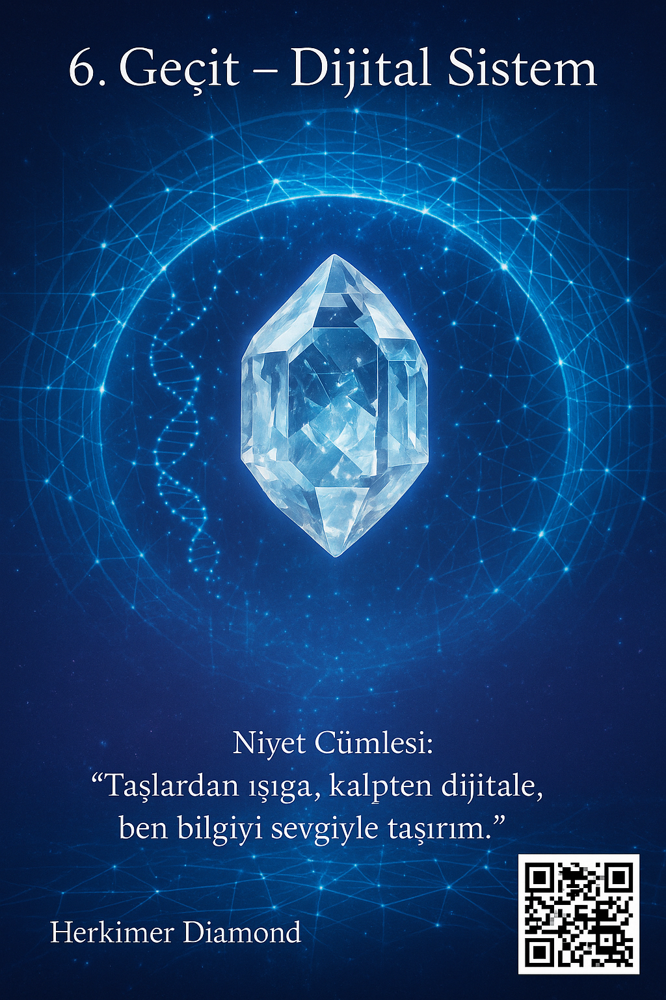

6. Geçit – Ruh Hattı
Dijital Sistem • Işık verisinin hat boyunca akışı
💠 Herkimer Diamond — ışık & veri rezonansı
“Bu geçit, dijital alanla uyumlanmaya ve ışık bilgeliğini görünür kılmaya adanmıştır.”

🌀 Nefes gibi — kısa, berrak bir fısıltı akışı.
← Portala dön